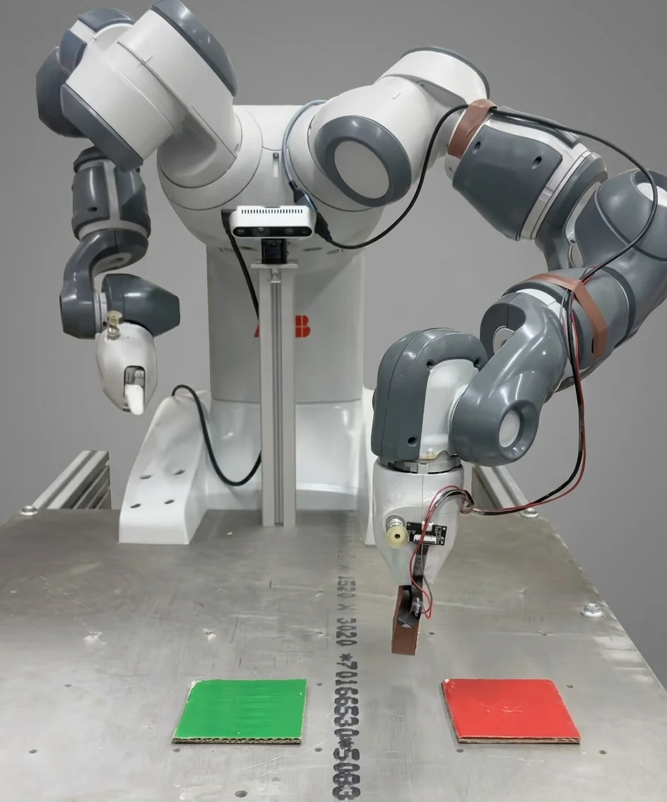
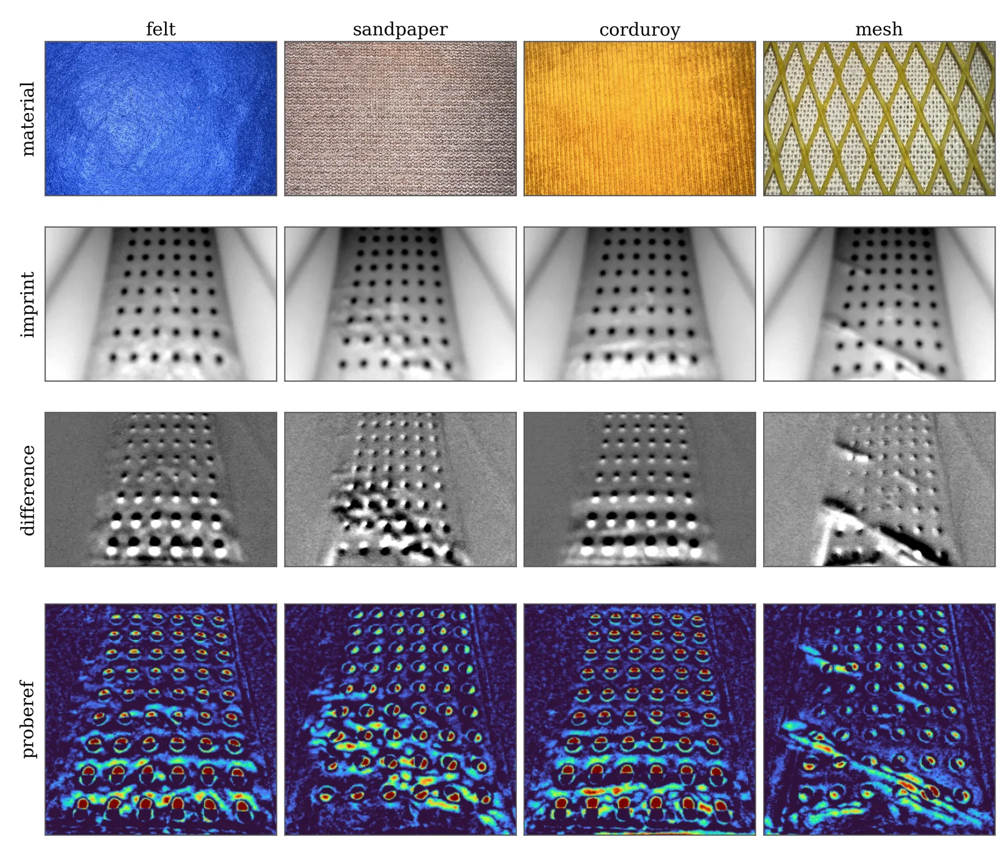
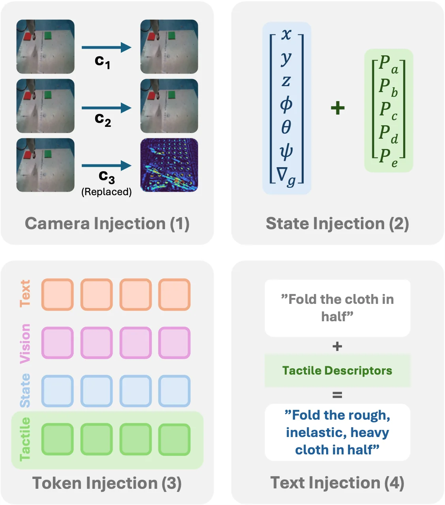
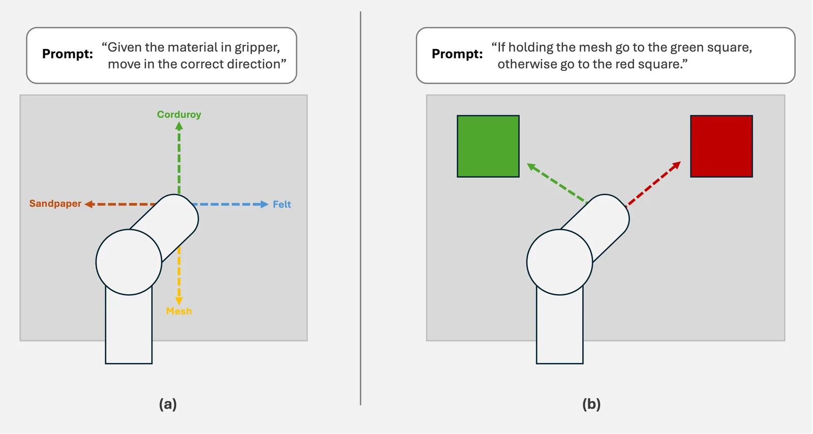
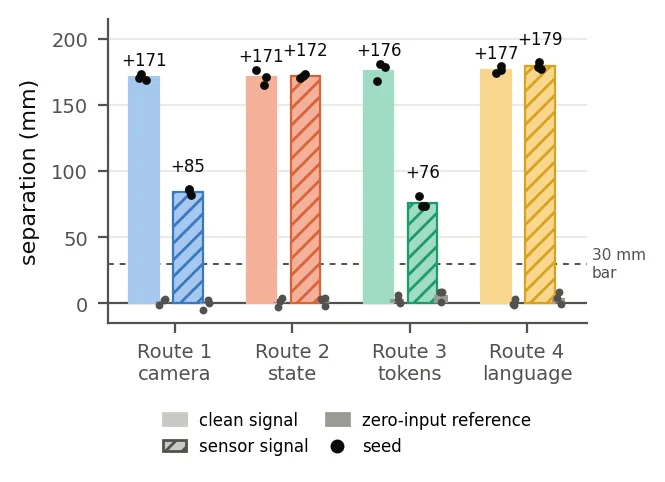
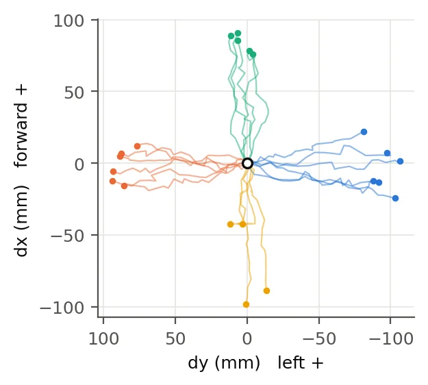
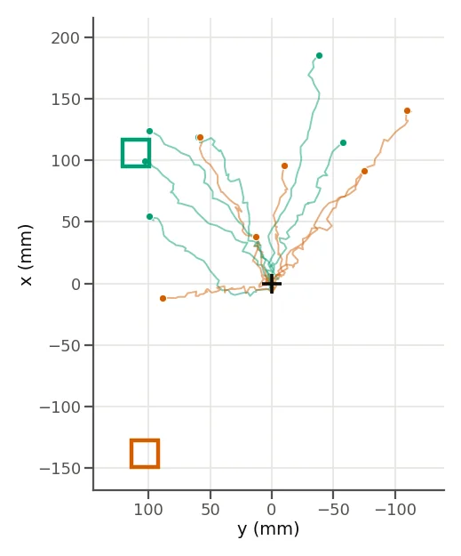
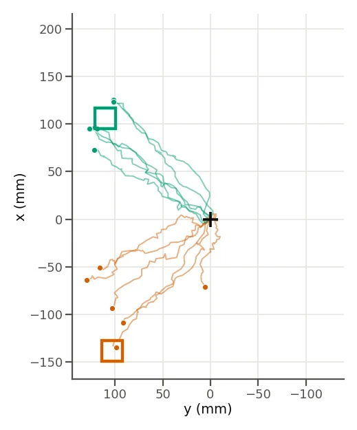
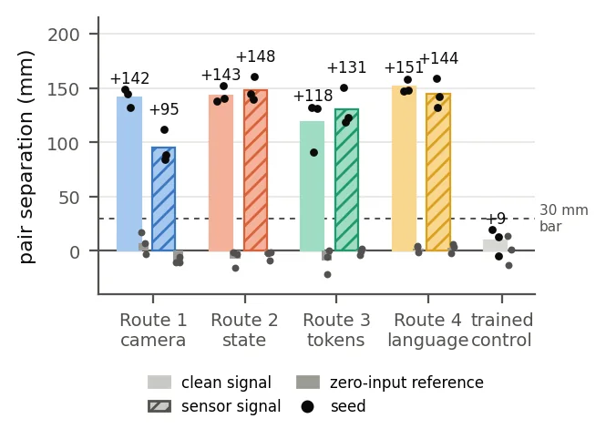
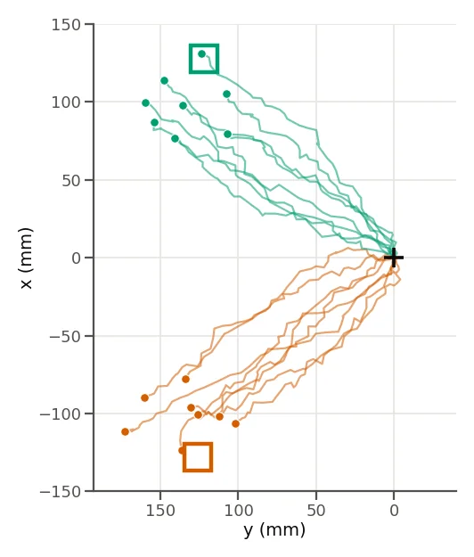

Robot learning · MSc dissertation
When does fine-tuning learn to use a new modality?
Fine-tuning a pretrained vision-language-action model on data that includes a new sensor does not guarantee the policy uses it. I added a tactile sensor to SmolVLA on an ABB YuMi, compared four ways of injecting the signal, and measured when the policy acted on it.

The question
A vision-language-action model maps camera images and a text instruction to robot actions. The properties that decide how an object should be handled, such as friction, weight and compliance, are poorly read from a camera. Two fabrics can look near identical and need completely different handling. Optical tactile sensors such as GelSight and GelTip produce that information as an image, which makes them a practical way to add touch to a model built around images.
The FuSe study found that fine-tuning a pretrained generalist policy with a plain imitation loss on data that includes a new sensor leads to that sensor being largely ignored. This project centres on that failure mode. I wanted to know under what conditions a fine-tuned VLA conditions its behaviour on an added tactile channel, and whether the way the signal enters the model makes a difference.
The recent VTLA papers each pick one integration strategy: the tactile image as an extra camera stream, a dedicated encoder feeding tokens, or tactile converted to text. None of them compare the strategies under matched conditions, so the comparisons are confounded by platform, task and data. Here the four routes are run against each other with the backbone, task, demonstrations and training recipe held constant.

Getting a VLA onto the YuMi
The YuMi does not appear in any of the cross-embodiment pre-training corpora and I could find no published deployment of a VLA on one, so the first job was a pipeline with no precedent to copy. The robot is driven from Python through a RAPID motion server and the yumipy client. Demonstrations are recorded as discrete state, action and image steps with a language prompt, converted to a LeRobot dataset, and used to fine-tune SmolVLA from the public smolvla_base checkpoint. The action space is a 7-D end-effector delta plus gripper state. Cartesian deltas are closer to the pre-training data than joint angles and they make displacement a direct measure of what the policy did.
SmolVLA was chosen because it is small enough to fine-tune on a single RTX 4060 Ti, which is where the project started. An eight-GPU H100 node was secured later and used for the full-parameter runs.
The first fine-tune was cloth folding: 250 teleoperated episodes of folding a burlap square from six starting positions. The policy reproduced the descent and traverse and behaved differently across prompts, which proved the pipeline end to end, but it never produced a reliable fold. That held regardless of episode count or training recipe, and a task without a repeatable success measure could not carry the tactile comparison. The task was simplified to navigation, where the policy's behaviour is read from its end-effector travel.
Two checks then established what the policy could already be steered by. With 80 episodes where the prompt names a direction, the policy separated left from right by 161 mm on the trained phrasings and 95 mm on phrasings it had never seen. With the camera covered the separation was 185 mm, so the steering was coming from language. For vision, the prompt named a coloured square and the policy had to find it: 10 of 18 rollouts reached the correct square, all 9 paired tests moved the right way, and physically swapping the squares reversed the motion. A larger set of 510 episodes was then used to pick a training recipe. Unfreezing the language model alongside the action expert gave 71% against 54% for the action expert alone, and that checkpoint became the warm start for every tactile run.
The sensor
The tactile sensor is a low-cost reproduction of the GelSight Wedge: a 3D-printed shell, a translucent silicone gel with a grid of tracking dots, one white LED and a 1080p camera module looking at the gel from behind. Four materials with distinct imprints were used throughout: felt, sandpaper, corduroy and a mesh.
Before any of it went near the VLA, the sensor had to pass a stand-alone gate. I recorded 50 imprints per material at varied orientations across two sessions, with an empty-gripper reference frame, and evaluated leave-one-session-out so that a classifier could not pass by memorising one session's lighting or gel condition. The first result was above 99% for every method, which was too good. A mean-RGB classifier on its own reached 92%, meaning the housing was leaking ambient light and the materials were being told apart by the colour of the room. The housing was sealed with opaque foil and the imprints recollected. Mean RGB fell to 39.5%. On the sealed sensor a CNN reaches 92.6% leave-one-session-out accuracy (macro-F1 0.908) against 85.8% for a classical pipeline, over 8 folds of 4 materials across 2 sessions.

Four routes in
Each route uses a different surface of the model. Within a task they share the same episodes, actions and recipe, so a difference between routes can be attributed to the route.
- Camera. The tactile image goes into camera slot c3 and the SigLIP encoder reads it like any other view. The other two slots carry the overhead camera.
- State. A four-way material vector is appended to the proprioceptive state, giving an 11-dimensional state instead of 7.
- Token. The classifier's 512-dimensional embedding passes through a new zero-initialised projection and joins the token sequence, the same path the state vector already takes.
- Language. The material is written into the prompt as a short clause.
Every route is trained in two variants. The clean-signal variant injects the true material label and shows the most the route can carry. The sensor-signal variant injects what the sensor and classifier actually produce: the gel image for the camera route, the softmax for state and language, the live embedding for the token.

Two tasks
The tasks were chosen to differ in how much of the demonstrated action the tactile signal explains. In the direction task the material in the gripper decides the whole motion: sandpaper goes left, felt right, corduroy forward, mesh back, from a random start, with the prompt fixed at "Given the material in the gripper, move in the correct direction". 80 episodes, 20 per material.
In the target task the tactile signal decides a small residual of an otherwise vision-driven motion. The prompt is fixed at "If holding the mesh go to the green square, otherwise go to the red square", the squares move between three layouts and swap order, so the policy has to find them visually and the tactile channel is the only cue for which one. 256 episodes, half with the mesh and the rest empty or holding another material.
The measure is mean separation in millimetres between the end-effector stopping points: left against right for the direction task, along the axis between the squares for the target task. Every arm is scored against a zero-input reference, the same checkpoint with the tactile input blanked, and against a control trained with the input zeroed throughout. If the tactile run separates and the reference collapses, the policy was reading the tactile input. If the control separates as well, there was some other cue in the scene. Policies were evaluated offline on held-out episodes and then live on the YuMi in matched pairs that differ only in the material in the gripper, with a sign-flip test at p < 0.05 and a pass bar of 30 mm.

Direction task: every route conditions
Eight policies, three seeds each. With the clean signal every route conditions to a similar degree: 171 mm through the camera slot, 171 mm through the state vector, 176 mm through the token and 177 mm through the prompt, with four-way accuracy at 99 to 100%. The 24 zero-input references all fall between −5 and +9 mm.
With the sensor signal the routes split. State and language stay at 172 mm and 179 mm with 100% accuracy, since they receive the classifier's prediction directly. The camera route with the raw gel image drops to 85 mm at 65%, and the token route with the live embedding to 76 mm at 73%. All four clear the 30 mm bar on every seed.
The clean-signal camera policy was then run on the robot from 20 random starts with the material rendered into its slot. Every run went the demonstrated direction, 21 of 21, and the left-against-right separation was 182 mm against 171 mm offline. The offline separation carries to the robot without loss.


Target task: nothing conditions under imitation alone
The same eight policies were trained on the target task, warm-started from the vision-conditioned checkpoint, plus a control. Every mean separation fell between −11 and +3 mm. Clean signal and sensor signal came out almost identical, the zero-input references sat in the same band, and the control gave −3 mm. The tactile policies could not be told apart from the same policy with its input removed or from a policy that never had one.
In trajectory form the null is an upward fan: the same forward motion whatever the gripper holds, with no consistent movement towards either square. The sensor-signal camera policy was run live in 16 matched pairs and produced the same fan, −37 mm along the target axis with 6 of 16 pairs positive. The policy that had been steered by colour a few weeks earlier had stopped tracking the squares at all.
The training losses explain it. Every plain-imitation run, control included, finishes at a loss of 0.060, and the clean-signal and sensor-signal variants of a route finish identical to four decimal places on the same seed. The tactile channel decides only which square, a small share of the action variance, so a policy that ignores it and reaches the same way every time loses almost nothing on the imitation objective. The gradient that would push it to read the imprint is swamped by the gradient for the reach that both squares share.
An auxiliary head fixes it
Varying the prompt and the recipe did not help, so the objective was changed. A single linear layer with a sigmoid was attached to the action expert's feature vector and trained to predict whether the gripper holds the mesh, with its binary cross-entropy added to the imitation loss at a weight of 0.1. The head is dropped at inference. Its only job is to give the tactile information a gradient of its own during training.
With the head in place the target task was repeated with the same data, recipe, warm start and measures. Every route now conditions. With the clean signal the separations are +142 mm through the camera slot, +143 mm through the state, +103 mm through the token and +151 mm through the prompt. With the sensor signal they are +95, +148, +118 and +144 mm. The zero-input references collapse to between −16 and +18 mm, and the control gives +9 mm, so the head on its own does nothing and the separation is coming from the tactile input.
The loss moved from 0.060 to 0.059 for the camera, state and language routes on every seed. That bounds the imitation component the head recovered at around 2%, which is the share of the demonstrated action that touch resolves. It was enough to condition the policy on every route.


The camera-route policy with the sensor signal and the head was then run live in 24 matched pairs across three blocks, with the squares moved and swapped between blocks. Every pair separated in the correct direction, 24 of 24, with a mean separation of +155 mm against +149 mm offline. The mesh runs reached the green square in 24 of 24 trials and the empty-gripper runs reached the red in 18 of 24. Five of the six misses were in the third block, where a ripple in the gel from repeated clamping was being read as mesh and the empty-gripper runs stopped short between the squares.


What it means
Whether a fine-tuned VLA uses a new input depends on how much of the demonstrated action that input explains. When touch decided the whole motion, every route conditioned under plain imitation. When touch decided a residual of a motion that vision and language mostly determined, no route conditioned, and the policy reproduced the FuSe failure on a different model and robot. The failure is task dependent, and it is likely whenever the added modality has a small effect on the output.
The auxiliary head works by making the material a training target in its own right, so the tactile channel gets a gradient that does not depend on its share of the action loss. The control shows that adding the head is not what conditions the policy. The head needs a tactile input to act on, and zeroing that input at test time collapses every route to within −16 and +18 mm.
With the clean signal all four routes perform alike, so under matched conditions the choice of route matters less than the training objective. With the sensor signal the routes stop being directly comparable, because each is handed a different representation: the state and language routes get the classifier's prediction, the token route gets its embedding, and the camera route has to read the raw gel image itself.
Limitations and what comes next
- The head predicts a binary label, mesh or not, or a four-way class. It helps on tasks where the useful tactile information is which material is held. A continuous signal such as shear or contact area would need a regression head and a different loss, and testing whether the same mechanism holds when the signal varies within an episode is the next experiment.
- The 3D-printed gripper deformed under repeated clamping and needed recalibrating between sessions, and the gel picked up a ripple that cost trials in the final block. A more rigid mount and the opaque housing from the start are the first hardware changes.
- The folding task was set aside because the fold itself was not repeatable. With the head in place the next step is a fold where touch confirms the grasp before each lift, with the head predicting grasp state.
- Every fine-tune here was on an embodiment the model had never seen, so the action expert was learning the YuMi and the tactile channel at the same time. Mounting the sensor on an arm that is in SmolVLA's pre-training data, such as the SO-101, would leave the motion priors intact and spend the fine-tuning budget on touch alone.